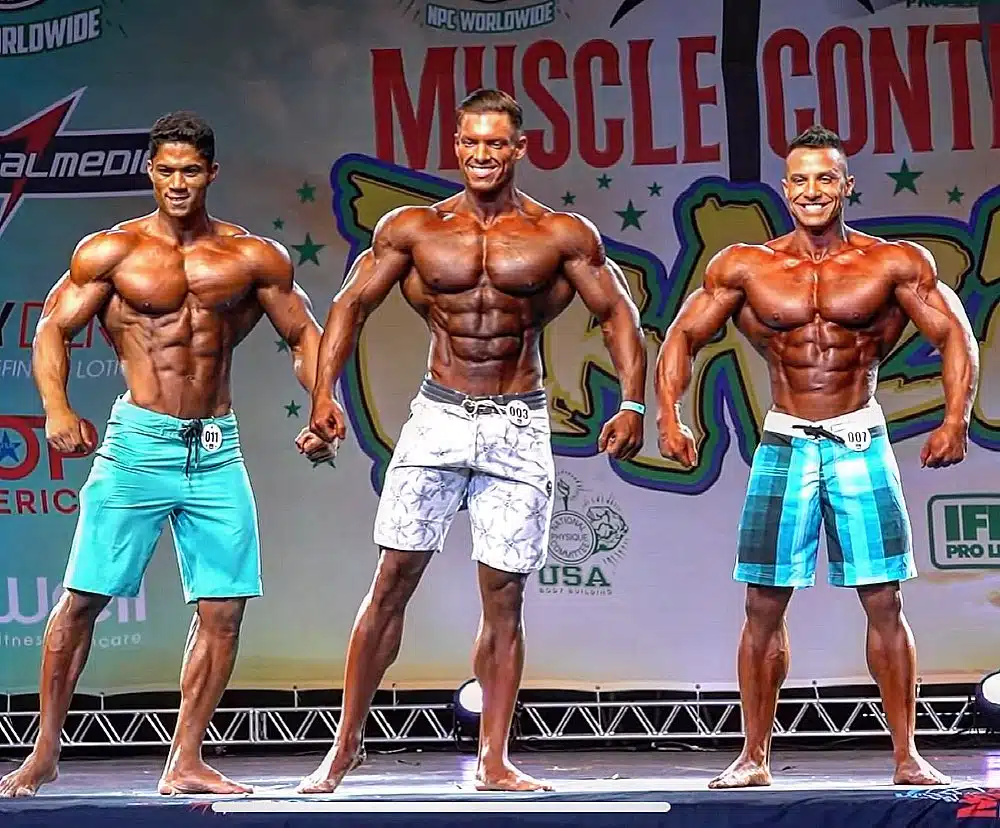

quais são?
No fisiculturismo existem provavelmente mais de uma duzia de categorias, com 3 principais, mas por que existem tantas assim?
o motivo é um pouco obvio, mas vamos lá. Quando o fisiculturismo começou ele era apenas um esporte, com uma categoria. Mas o fato era apenas um, que as pessoas tinham objetivos diferentes a maioria dos fisiculturistas buscavam um corpo estetico, bonito e esculpido, mas outros buscavam tamanho, os famosos brutamontes, outros estavam em busca de esculpir apenas a parte superior de seu corpo e claro que mulheres tambem estavam no esporte com cada uma um objetivo diferente. Com toda esta situação, os palcos se tornaram uma bagunça completa, brutamontes ao lado de corpos um pouco menoresporem mais esteticos, e graças a isso os juizes tambem enlouqueceram com tal variedade. A solução encontrada foi bem simples, dividir o fisiculturismo. dito e feito, como eu disse, existe mais de uma duzia de categorias hoje em dia, mas, por hoje, vamos nos focar apenas nas 3 categorias principais do fisiculturismo masculino.
Classic physiques

Vamos começar pelo classico, literalmente. a classic physiques é o fisiculturismo "primordial" pois foi a primeira categoria, por assim dizer. A classic como é chamada, veio antes até mesmo das categorias existirem, pois a ideia inicial do fisiculturismo, era literalmente a mesma da classic.
Seu objetivo
O objetivo da classic physiques é bem simples, construir um corpo mais que estetico, a classic se inspira até mesmo nos gregos antigos, que tinham corpos esteticos e em plena forma fisica, simplificando, para a classic, quanto mais estetico, simetrico e em forma, mais você pode ganhar. Ou seja, se você for maior mas sem estetica você ainda sim perde para o menor e mais estetico
Open physiques

A open são os grandes, os gigantes, os enormes. A open apresenta para nós uma ideia muito diferente da classic, enquanto a classic apresenta fisicos bem estruturados e esculturais a open apresenta fisicos simplesmente exagerados e grandes. A aplicação de bomba é comum no fisiculturismo, mas na open, a bomba não é suficiente, é possivel até mesmo ver a aplicação de oleo nos atletas da Open, é tudo simplesmente baseado, no exagero.
Seu objetivo
eu deixei bem claro qual é o objetivo, não é mesmo? Mas vamos ser mais especificos, a open tem o objetivo de apresentar atletas grandes, e apenas. diferente da classic, a open não se importa com estetica, desde que você seja grande.
Men's physiques
O Men's Physique é uma categoria de fisiculturismo masculino Esta categoria é destinada a homens que treinam com pesos para manter a forma e praticam uma dieta saudável e equilibrada, mas que preferem desenvolver um físico menos musculoso, com aspecto atlético e esteticamente agradável. certo, mas então qual a diferença da men's Physique para a classic? A diferença é simples, a classic apresenta o corpo inteiro, a men's apresenta com maior foco a parte superior do corpo.
Seu objetivo
O objetivo da mens é apresentar um corpo atletico e estetico, mas com o foco quase que 100% na parte superior do corpo, tanto que se apresentam de bermuda diferente de todas as outras categorias que se apresentam com a famosa sunga competitiva.